Налаштування (Settings)¶
Цей розділ містить набір утиліт для налаштування різних аспектів PortaPack. Налаштування зберігаються в постійній пам'яті. Усі знімки екрана на цій сторінці — з вашого пристрою (Mayhem v2.4.0).
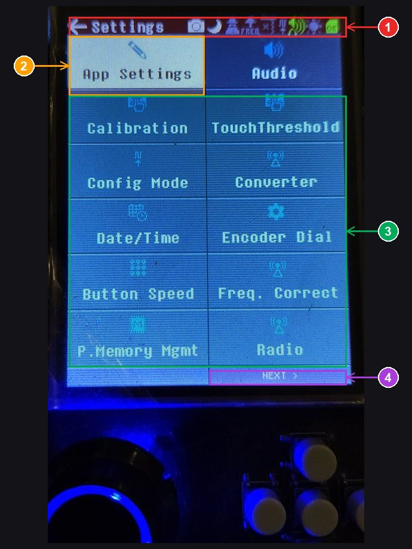
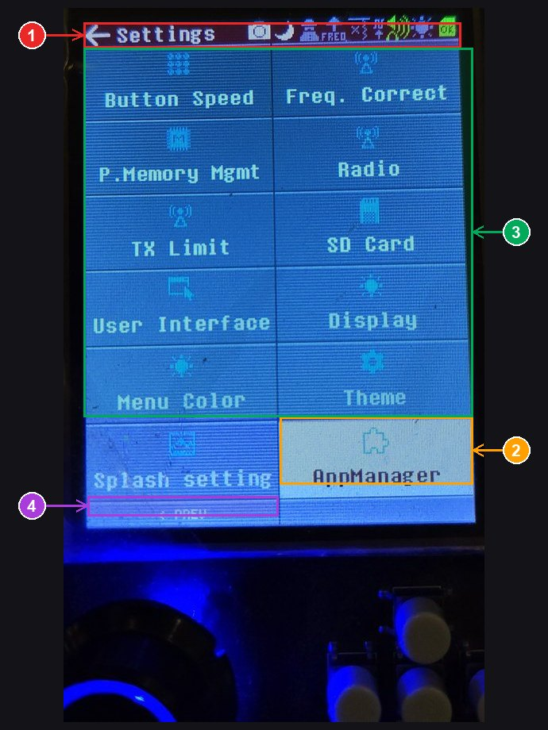
Меню складається з двох сторінок (перемикання — кнопки NEXT / PREV внизу): App Settings, Audio, Calibration, TouchThreshold, Config Mode, Converter, Date/Time, Encoder Dial, Button Speed, Freq. Correct, P.Memory Mgmt, Radio, TX Limit, SD Card, User Interface, Display, Menu Color, Theme, Splash setting, AppManager. У деяких прошивках є також Battery (лише коли виявлено мікросхему керування акумулятором) і Hard Reset (зовнішній застосунок).
Елементи екрана (1-й знімок):
- Назва розділу та значки стану
- Вибрана кнопка (App Settings)
- Пункти налаштувань
- NEXT › — наступна сторінка
Елементи екрана (2-й знімок):
- Назва розділу та значки стану
- Вибраний пункт (AppManager)
- Пункти налаштувань
- ‹ PREV — попередня сторінка
AppManager¶
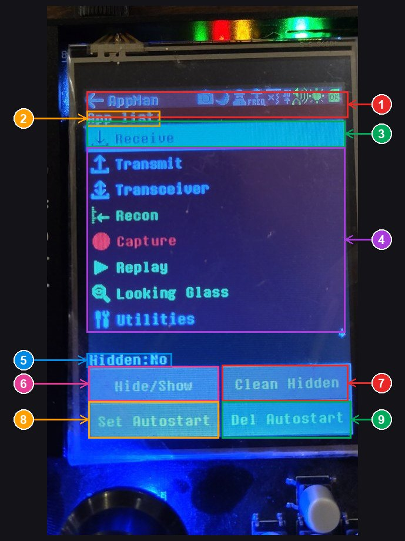
Дозволяє приховувати/показувати застосунки та встановлювати/скасовувати застосунок автозапуску. Угорі — список розділів (Receive, Transmit, Transceiver, Recon, Capture, Replay, Looking Glass, Utilities …), внизу кнопки Hide/Show, Clean Hidden, Set Autostart, Del Autostart і позначка Hidden: No/Yes.
Елементи екрана:
- Рядок заголовка (AppMan)
- App list — список розділів
- Вибраний розділ (Receive)
- Розділи: Transmit, Transceiver, Recon, Capture, Replay, Looking Glass, Utilities
- Hidden: No/Yes — чи приховано
- Hide/Show — сховати/показати
- Clean Hidden — очистити приховані
- Set Autostart — автозапуск
- Del Autostart — скасувати автозапуск
App Settings¶
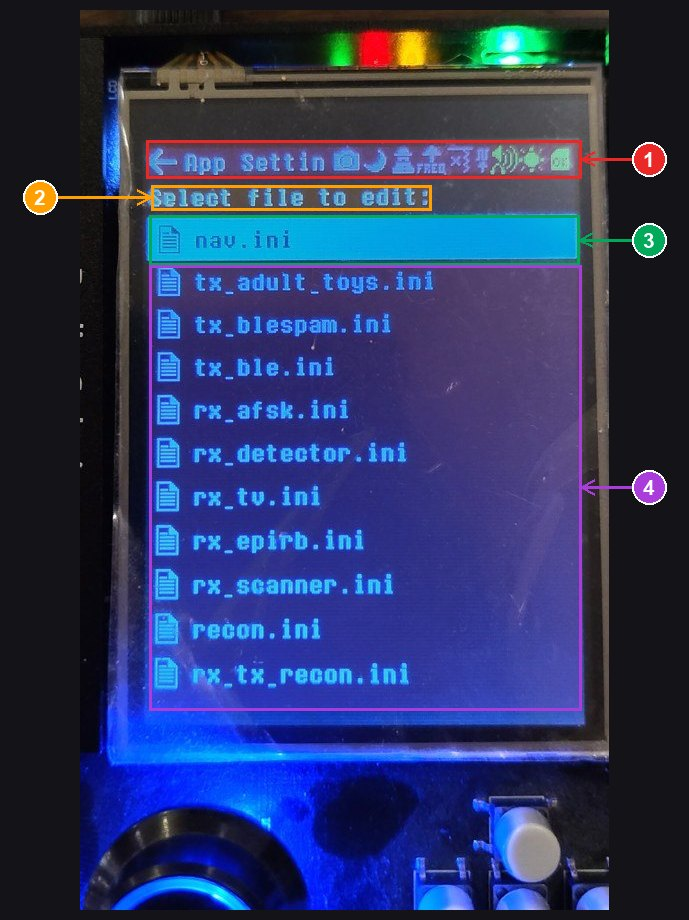
Налаштування кожного застосунку зберігаються у відповідних файлах .ini у теці /SETTINGS (якщо встановлено відформатовану SD-карту), щоб бути постійними. Оновлений .ini записується щоразу, коли застосунок закривається. Щоб скинути застосунок до типових налаштувань, можна безпечно видалити відповідний файл .ini — новий файл буде створено автоматично під час наступного запуску. Також можна видалити окремі рядки, щоб скинути лише частину налаштувань.
Екран показує список файлів для редагування (nav.ini, tx_ble.ini, rx_scanner.ini …).
Елементи екрана:
- Рядок заголовка
- Select file to edit — виберіть файл налаштувань
- nav.ini — вибраний файл
- Інші .ini (tx_ble.ini, rx_scanner.ini, recon.ini …)
Чорний список (Blacklist)¶
Щоб повністю вимкнути певні застосунки, створіть вручну в теці SETTINGS текстовий файл blacklist (наприклад, у застосунку Notepad). Перелічіть у ньому небажані застосунки за їхньою назвою з урахуванням регістру (текст під піктограмою застосунку) — по одному в рядок. Вони будуть вимкнені (приховані) після наступного завантаження. (Потрібна прошивка 1.8.0+ і SD-карта.)
Audio¶
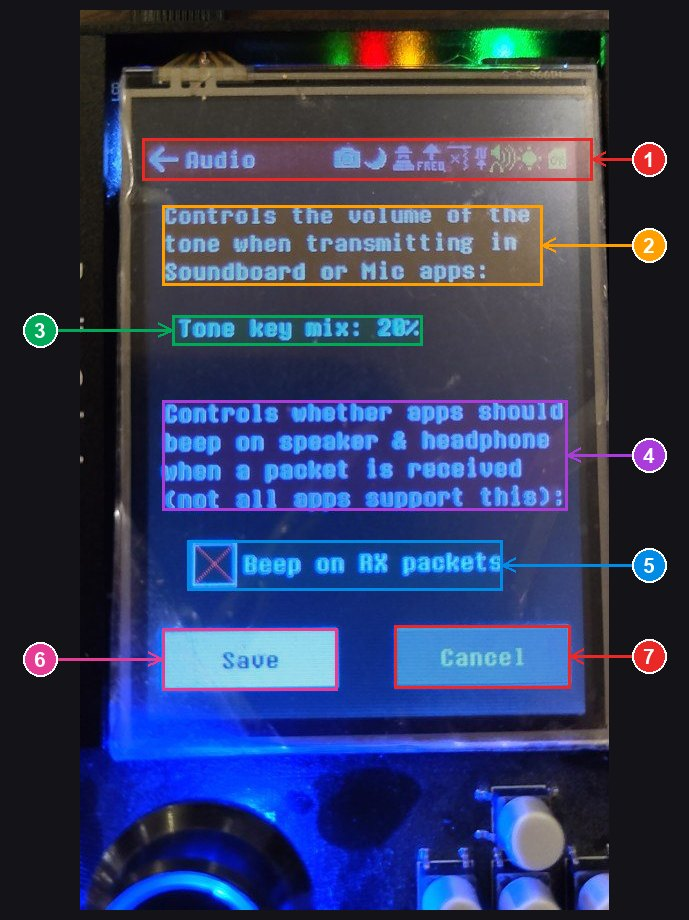
Регулює такі параметри звуку:
- мікшування тону CTCSS під час передавання в застосунках Soundboard або Mic, у відсотках від рівня звуку (10–99 %);
- звуковий сигнал на динаміку/навушниках під час приймання пакета в окремих застосунках (підтримують не всі) — прапорець Beep on RX packets.
Елементи екрана:
- Рядок заголовка
- Керує гучністю тону при передаванні (Soundboard, Mic)
- Tone key mix — відсоток (20%)
- Чи пищати динаміку при прийманні пакета
- Beep on RX packets — прапорець
- Save — зберегти
- Cancel — скасувати
Battery¶
Налаштування лише впливають на спосіб відображення стану акумулятора і не змінюють поведінку заряджання. Меню Battery показується лише тоді, коли виявлено мікросхему керування акумулятором (наприклад, на H4M). Параметр Override: увімкнено — за напругою, вимкнено — за даними мікросхеми. Кнопка Reset скидає історію «навчання» мікросхеми (корисна після заміни акумулятора). На вашому H2 цього пункту немає.
Button Speed¶
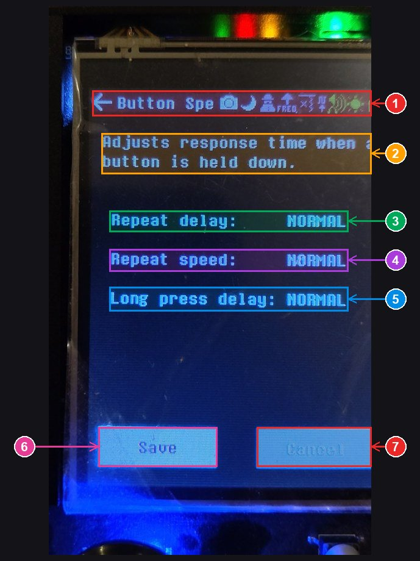
Регулює час реакції, коли кнопку утримують. Три параметри можна встановити на Normal або Fast:
- Repeat delay — через який час утримувана кнопка починає повторюватися;
- Repeat speed — як швидко повторюється утримувана кнопка;
- Long press delay — як довго треба утримувати кнопку для спрацювання довгого натискання.
Елементи екрана:
- Рядок заголовка
- Реакція кнопок при утриманні
- Repeat delay — затримка перед повтором
- Repeat speed — швидкість повтору
- Long press delay — тривалість довгого натискання
- Save
- Cancel
Calibration¶
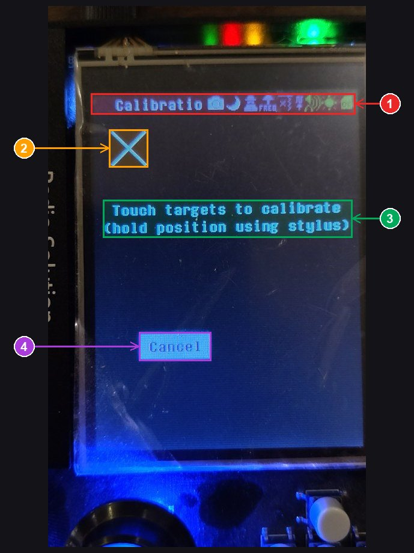
Застосунок калібрування сенсорного екрана: слідуйте екранним інструкціям. Потрібно утримувати палець (або стилус) на кожній цілі щонайменше секунду, щоб застосунок правильно визначив область дотику; наступна ціль з'явиться після відпускання.
Елементи екрана:
- Рядок заголовка
- Ціль калібрування — торкніться хрестика
- Підказка: тримайте дотик (стилус) на кожній цілі ≥ 1 с
- Cancel — скасувати калібрування
Config Mode¶
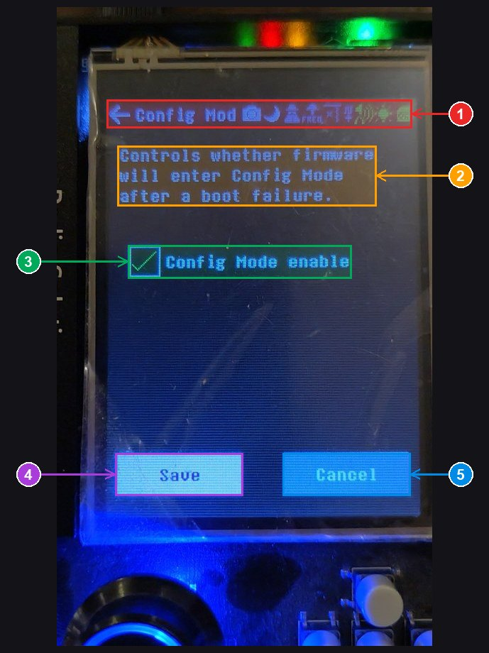
У деяких випадках PortaPack може час від часу запускатися в режимі Config Menu — наприклад, якщо швидко двічі натиснути кнопку живлення або якщо при підключенні USB-кабелю виникла невелика електрична завада. Якщо це трапляється часто (темний екран і блимання світлодіодів), код Config Menu можна вимкнути в Settings → Config Mode (прапорець у постійній пам'яті вимикає активацію Config Menu). Прапорець Config Mode enable керує тим, чи входитиме прошивка в Config Mode після невдалого завантаження.
Елементи екрана:
- Рядок заголовка
- Опис: чи входити в Config Mode після невдалого завантаження
- Config Mode enable — прапорець
- Save
- Cancel
Converter¶
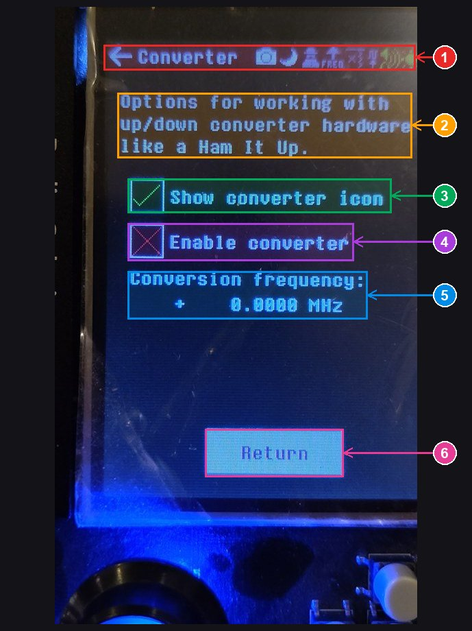
Налаштування режиму конвертера (підвищувального чи знижувального) — для роботи з апаратним апконвертером, наприклад Ham It Up.
- Show converter icon — показати/сховати значок (приховування також вимикає перетворення);
- Enable converter — увімкнути конвертер;
- + / − — знак зміщення, а також саме значення зміщення (Conversion frequency).
Приклад: якщо потрібно слухати 7 МГц через Ham It Up (гетеродин 125 МГц), увімкніть конвертер із зсувом +125 МГц — на екрані відображатиметься потрібна вам частота, а реально налаштовуватиметься «відображена частота + зсув». Те саме можна вмикати/вимикати значком FREQ із стрілкою у рядку заголовка.
Елементи екрана:
- Рядок заголовка
- Опція для роботи з апконвертером (Ham It Up тощо)
- Show converter icon — показати значок
- Enable converter — увімкнути
- Conversion frequency — знак (+/−) і величина зсуву, МГц
- Return — повернутися
Date/Time¶
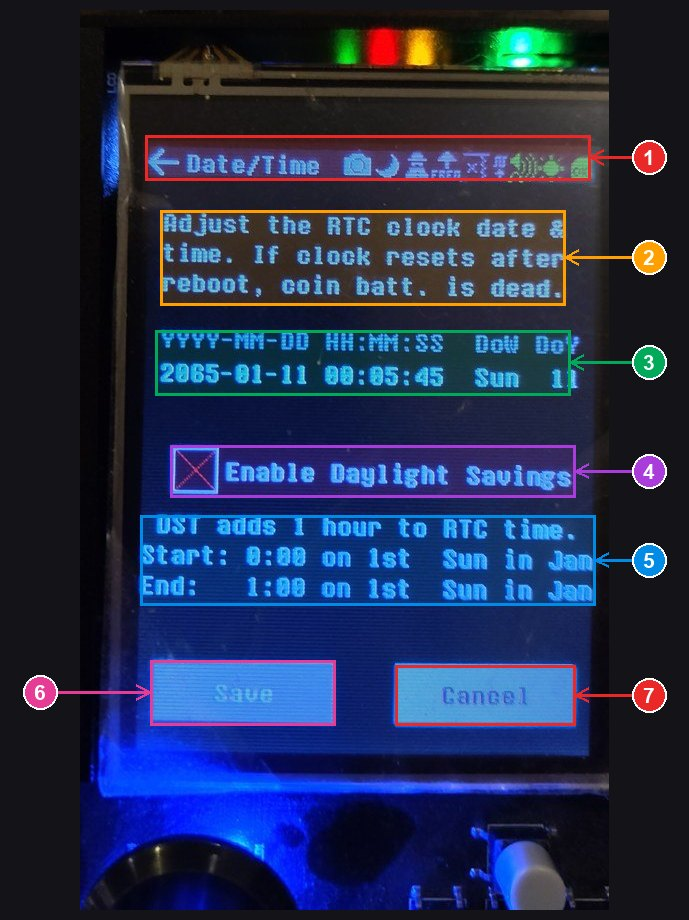
Встановлення дати й часу, які відображаються на головному екрані (якщо ввімкнено), у записах журналів і мітках часу файлів. Щоб час не збивався, коли PortaPack вимкнено, потрібна батарейка (монетна комірка). Якщо батарейка розряджена/відсутня, але є SD-карта, дата збільшується на 1 день за кожного перезавантаження — щоб записи/файли були в хронологічному порядку.
Якщо ввімкнено перехід на літній час (Enable Daylight Savings), час зсувається на одну годину в зазначеному діапазоні дат (N-й день тижня N-го місяця; час на екрані вважається вже скоригованим). Збереження часу після натискання Save триває близько секунди. Підтримується з версії прошивки 2.0.0.
На знімку видно типовий симптом розрядженої батарейки: дата 2065-01-11 — годинник скинуто.
Елементи екрана:
- Рядок заголовка
- Підказка: якщо годинник скидається — розряджена батарейка
- YYYY-MM-DD HH:MM:SS, день тижня й року (дата 2065-01-11 — годинник скинуто)
- Enable Daylight Savings — перехід на літній час
- Початок і кінець літнього часу (N-й день тижня N-го місяця)
- Save
- Cancel
Display¶
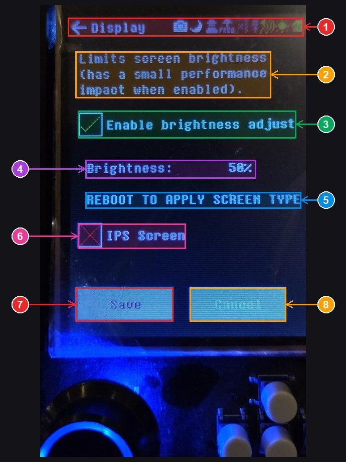
- Enable brightness adjust — обмежує яскравість екрана (незначно впливає на продуктивність, коли ввімкнено); нижче — значення Brightness у відсотках.
- IPS Screen — ввімкніть, якщо ваш PortaPack має IPS-панель; потрібне перезавантаження.
Елементи екрана:
- Рядок заголовка
- Обмеження яскравості (трохи знижує швидкодію)
- Enable brightness adjust — регулювання яскравості
- Brightness — яскравість (50%)
- Підказка: перезавантажте для застосування типу екрана
- IPS Screen — для екранів з IPS-матрицею
- Save
- Cancel
Encoder Dial¶
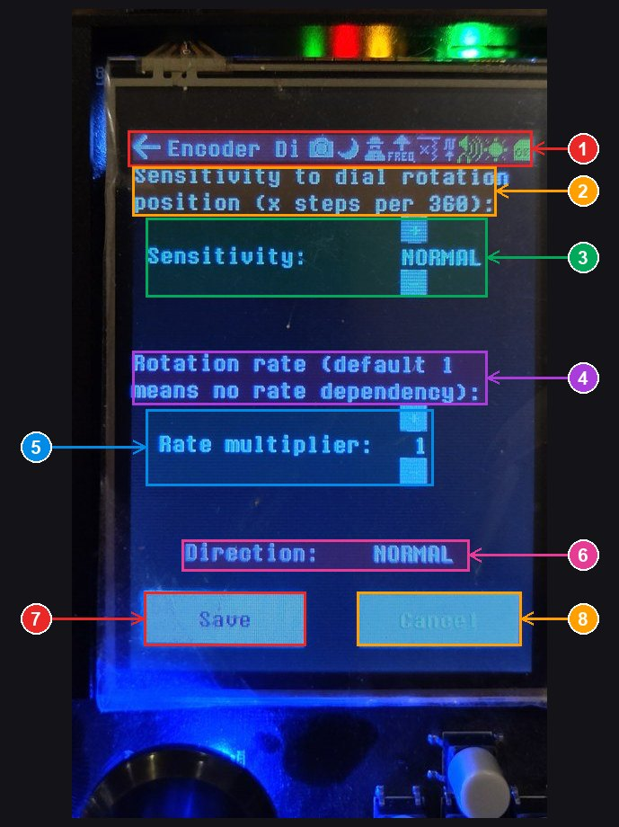
Чутливість диска енкодера (кількість кроків на повний оберт): Low, Normal або High. Rate multiplier задає множник кількості кроків при швидшому обертанні — для швидкого прокручування частот, списків файлів, гучності тощо. Також можна задати напрямок: Normal або Reverse.
Елементи екрана:
- Рядок заголовка
- Sensitivity to dial rotation — кроків на оберт
- Sensitivity: Low / Normal / High
- Rotation rate — множник при швидкому обертанні
- Rate multiplier (1 — без залежності)
- Direction — напрямок (Normal / Reverse)
- Save
- Cancel
Freq. Correct¶
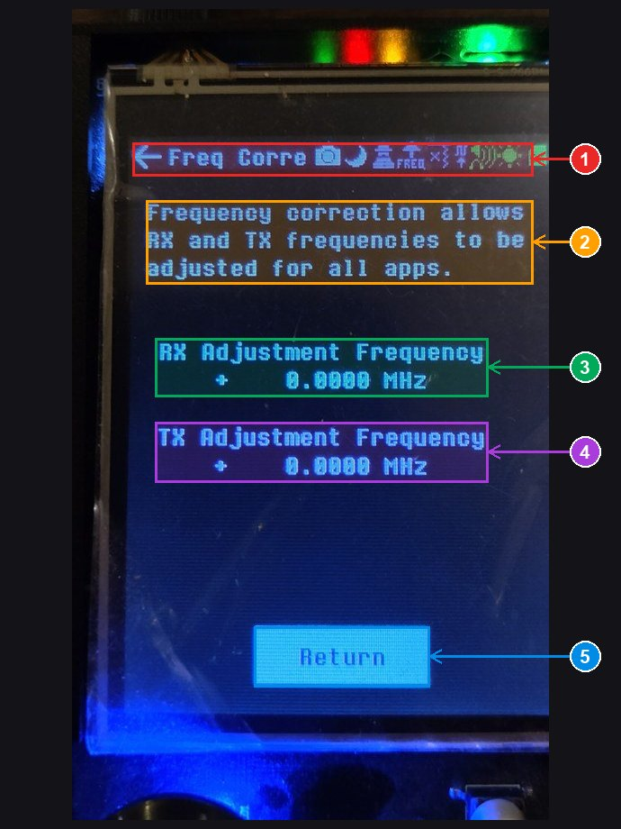
Корекція частоти передавання й/або приймання в Гц. Приймається значення від −4 до +4 МГц (інакше обрізається через тип змінної в постійній пам'яті). Поле «+»/«−» перемикає режим корекції (додавання чи віднімання), а поля RX Adjustment Frequency і TX Adjustment Frequency задають корекцію для кожного режиму. Налаштування зберігаються автоматично.
Елементи екрана:
- Рядок заголовка
- Корекція частот RX/TX для всіх застосунків
- RX Adjustment Frequency — знак і значення, МГц
- TX Adjustment Frequency — знак і значення, МГц
- Return
P.Mem Mgmt¶
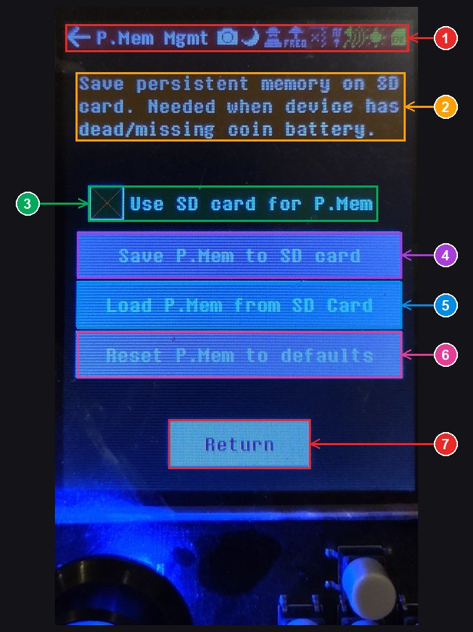
Параметри постійної пам'яті. Є 256 байтів постійної пам'яті, де зберігаються налаштування, якщо працює монетна батарейка. Розряджена/відсутня батарейка не завадить запуску й не покаже повідомлень, але налаштування буде втрачено після вимкнення живлення. Щоб цього уникнути, налаштування можна зберігати у файлі на SD-карті.
- Use SD card for P.Mem — якщо позначено, прошивка під час запуску спробує завантажити останні збережені налаштування (прапорець створює файл-позначку в
SETTINGS); - Save P.Mem to SD card — зберегти поточну постійну пам'ять на SD-карту;
- Load P.Mem from SD Card — вручну завантажити постійну пам'ять з SD-карти;
- Reset P.Mem to defaults — скинути постійну пам'ять до заводських значень.
Елементи екрана:
- Рядок заголовка
- Збереження постійної пам'яті на SD (для розрядженої батарейки)
- Use SD card for P.Mem — використовувати SD
- Save P.Mem to SD card
- Load P.Mem from SD Card
- Reset P.Mem to defaults
- Return
Radio¶
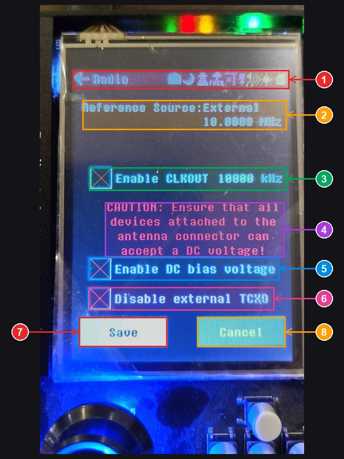
У розділі радіо є три параметри:
- Enable CLKOUT — увімкнути/вимкнути вихід тактового сигналу (можна також значком CLKOUT у рядку заголовка). На HackRF r9 частоту CLKOUT зафіксовано на 10 МГц. На r1–r8 (Si5351C) її можна змінювати від 4 кГц до 60 МГц.
- Enable DC bias voltage — постійна напруга на антенному порту (значок Bias Tee у рядку заголовка стає жовтим). Якщо ввімкнено, переконайтеся, що всі пристрої, підключені до антенного роз'єму, допускають DC-зсув.
- Disable external TCXO — вимкнення зовнішнього тактового сигналу TCXO. Іноді при низькій напрузі акумулятора чи низькій амплітуді TCXO виникають проблеми із завантаженням — тоді його варто вимкнути.
Рядок Reference Source: External 10.0000 MHz вгорі вказує, що виявлено зовнішній опорний сигнал 10 МГц (від TCXO на PortaPack або з роз'єму CLK IN); якщо виявлення немає, використовується внутрішній тактовий генератор HackRF 25 МГц.
Warning
Деякі PortaPack мають вбудований TCXO 10 МГц, підключений паралельно до CLK IN. У такому випадку на роз'ємі CLK IN завжди присутній сигнал, і підключати до нього зовнішній генератор не варто (якщо не від'єднати PortaPack від HackRF).
Елементи екрана:
- Рядок заголовка
- Reference Source — джерело опорної частоти (External 10 МГц)
- Enable CLKOUT — вихід тактового сигналу (10000 кГц)
- Попередження: пристрої на антенному роз'ємі мають допускати DC
- Enable DC bias voltage — живлення антени (bias tee)
- Disable external TCXO — вимкнути зовнішній TCXO
- Save
- Cancel
SD Card¶
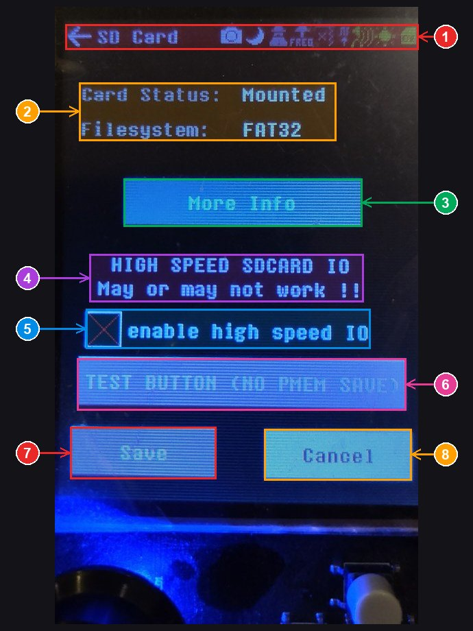
Показує стан карти (Card Status: Mounted, файлова система FAT32), кнопка More Info відкриває подробиці. Прапорець enable high speed IO вмикає швидший доступ до SD-карти (працює лише з швидкими картами). Використовуйте кнопку TEST BUTTON для перевірки перед збереженням налаштування. Файли можуть читатися/записуватися неправильно, якщо це ввімкнено на повільнішій SD-карті.
Елементи екрана:
- Рядок заголовка
- Card Status: Mounted; Filesystem: FAT32
- More Info — докладніше про карту
- Попередження: швидкий режим може не працювати
- enable high speed IO — швидкий доступ
- TEST BUTTON — перевірити перед збереженням
- Save
- Cancel
Splash settings¶
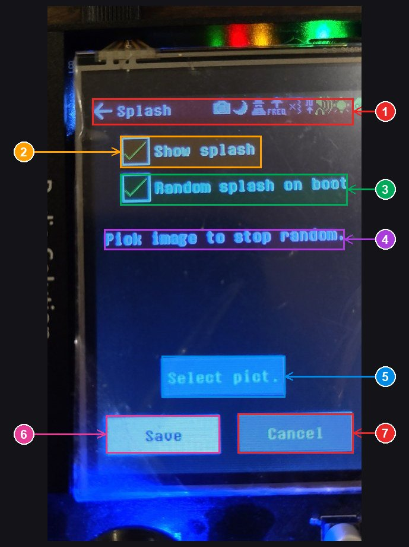
Налаштування заставки під час увімкнення.
- Show splash — увімкнути/вимкнути заставку під час завантаження.
- Random splash on boot — якщо ввімкнено, при кожному завантаженні показується випадкове зображення з теки
SPLASH/на SD-карті. Якщо вибрано фіксованийsplash.bmp, випадковий режим вимикається. - Select picture — вибрати конкретне зображення заставки з теки
SPLASH/.
Елементи екрана:
- Рядок заголовка
- Show splash — показувати заставку
- Random splash on boot — випадкова заставка
- Підказка: виберіть зображення, щоб вимкнути випадковий вибір
- Select pict. — вибрати зображення
- Save
- Cancel
Theme¶
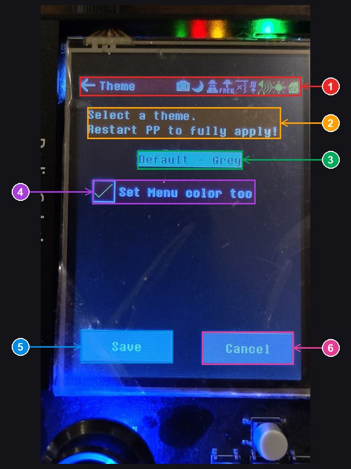
Вибір глобальної кольорової теми, що застосовується також до застосунків. Доступні теми: Default (сіра), Yellow, Aqua, Green, Red, Dark. Для повного застосування потрібне перезавантаження. Прапорець Set Menu color too перевизначає колір кнопок меню кольором теми (або залишає колір з «Menu Color»).
Елементи екрана:
- Рядок заголовка
- Select a theme. Restart PP to fully apply!
- Вибір теми (Default — Grey)
- Set Menu color too — застосувати тему до кнопок меню
- Save
- Cancel
Menu Color¶
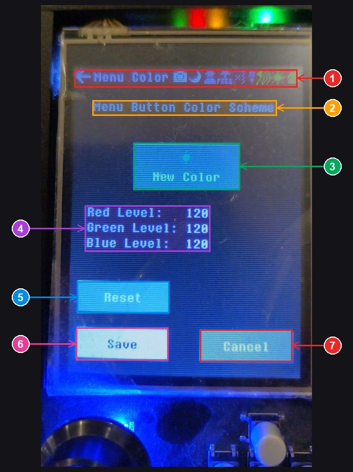
Змінює колірну схему фону кнопок меню застосунків із типової сірої на бажану. Рівні Red / Green / Blue Level (на знімку 120/120/120), кнопка New Color для вибору кольору, Reset і Save.
Елементи екрана:
- Рядок заголовка
- Menu Button Color Scheme — колір кнопок меню
- New Color — вибрати новий колір
- Red / Green / Blue Level (120 / 120 / 120)
- Reset — скинути
- Save
- Cancel
Touchscreen Threshold¶
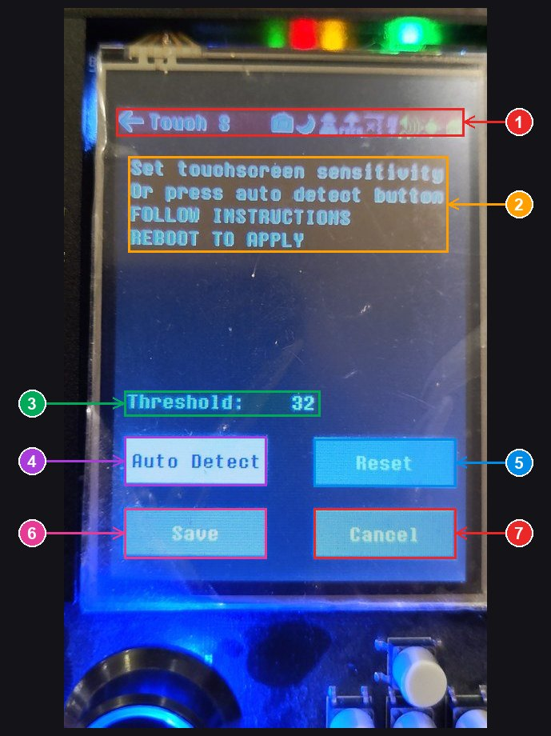
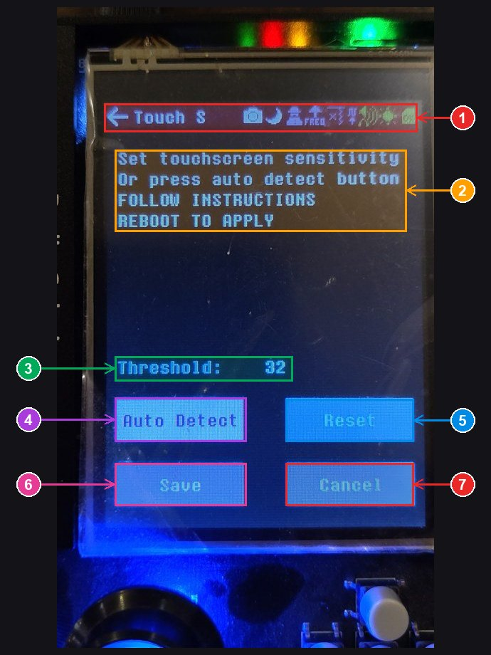
Резистивний шар виявлення дотику з часом зношується (він всередині м'якого шару, тому захисна плівка його не уповільнює) або спочатку має погану якість. Тому може знадобитися налаштувати поріг, якщо не вдається торкнутися певної області або якісь ділянки постійно «натиснуті», хоча ви їх не торкаєтеся (через це підсвічування залишається ввімкненим назавжди, бо пристрій вважає, що ви безперервно торкаєтеся екрана).
У найкращому випадку поріг має бути 1, але зазвичай шар вже частково пошкоджений, тому за замовчуванням — 32 (діапазон 1–1023). Якщо у вас описані проблеми, натисніть Auto Detect і дотримуйтесь підказок — поріг буде підібрано автоматично. Під час автовизначення не торкайтеся екрана, доки не завершиться зворотний відлік; якщо ви випадково торкнулися, просто почніть спочатку — нічого поганого не станеться.
Елементи екрана (1-й знімок):
- Рядок заголовка
- Інструкція: налаштуйте чутливість, Auto Detect, перезавантажте
- Threshold — поточний поріг (32)
- Auto Detect — автоматичний підбір
- Reset — типове значення
- Save — зберегти
- Cancel — скасувати
Елементи екрана (2-й знімок):
- Рядок заголовка
- Інструкція: налаштуйте чутливість, Auto Detect, перезавантажте
- Threshold — поточний поріг
- Auto Detect
- Reset
- Save
- Cancel
TX Limit¶
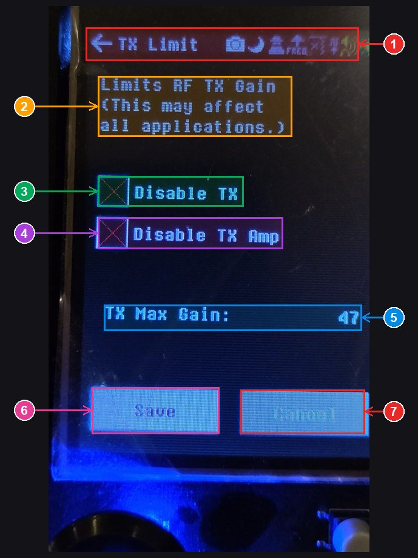
Обмежує підсилення ВЧ під час передавання глобально для всіх застосунків.
- Disable TX — вимикає всі функції передавання. Коли активне, поля TX Gain і TX Amp в усіх передавачах стають недоступними й показуються сірим зі значенням 0.
- Disable TX Amp — вимикає каскад підсилювача TX; поле TX Amp стає недоступним.
- TX Max Gain — максимально допустиме підсилення TX (0–47 дБ), обмежується в усіх застосунках. Коли підсилення досягає заданого максимуму, поле підсилення підсвічується блакитним.
Корисно, щоб випадково не передати на повну потужність.
Елементи екрана:
- Рядок заголовка
- Обмеження підсилення TX для всіх застосунків
- Disable TX — вимкнути передавання повністю
- Disable TX Amp — вимкнути ВЧ-підсилювач TX
- TX Max Gain — максимум підсилення (47 дБ)
- Save
- Cancel
User Interface¶
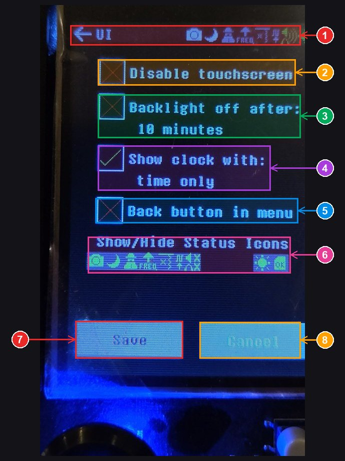
Параметри інтерфейсу можна вмикати (галочка) чи вимикати (х):
- Disable touchscreen — вимкнути сенсорний екран;
- Backlight off after — вимкнення підсвічування через 5, 15, 30 с, 1, 3, 5, 10 хв, 1 год або ніколи (за замовчуванням);
- Show clock with — чи показувати годинник на головному екрані, лише час чи час і дата;
- Back button in menu — додає кнопку «Назад» на всіх екранах меню;
- Show/Hide Status Icons — які значки рядка заголовка видимі: камера (знімок екрана), сон, stealth, конвертер, bias tee, годинник, звук, SD-карта. Значок динаміка показується лише на пристроях із кодеком AK4951; значки батареї — лише коли виявлено мікросхему керування акумулятором.
Note
Заставка налаштовується окремо: Settings → Splash settings.
Елементи екрана:
- Рядок заголовка
- Disable touchscreen — вимкнути сенсорний екран
- Backlight off after — вимкнення підсвічування (10 хв)
- Show clock with — показ годинника (лише час)
- Back button in menu — кнопка «Назад» у меню
- Show/Hide Status Icons — які значки показувати
- Save
- Cancel
Hard Reset¶
Скидає вибрані частини PortaPack до чистого стану. Це зовнішній застосунок (файл .ppma на SD-карті), який з'являється в меню Settings. Три параметри обираються незалежно прапорцями (усі ввімкнені за замовчуванням):
- Settings file — видаляє файли налаштувань застосунків (
.ini) із текиSETTINGS/; - Bad apps — видаляє несумісні зовнішні застосунки з теки
APPS/(версія яких не збігається з прошивкою); - P.mem reset — скидає постійну пам'ять до типових значень; після цього застосунок запускає калібрування сенсорного екрана, оскільки дані калібрування є частиною постійної пам'яті.
Натисніть Erase sel., щоб виконати вибрані дії, або No, щоб вийти без змін.
Warning
Це безповоротно видаляє вибрані файли й налаштування. Використовуйте, коли застосунки працюють неправильно після оновлення прошивки (наприклад, зовнішні застосунки більше не відповідають версії прошивки).